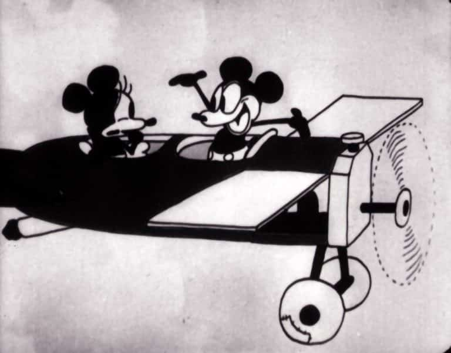

Walter Elias Disney se je rodil 5. decembra 1901 v Chicagu Flori Call in Eliasu Disneyju; četrti od petih otrok,
oče je bil angleškega in prej francoskega rodu, mati nemškega rodu. Novica, ki je bila večkrat razširjena in ustrezno zanikana,
citirana tudi v Corriere della Sera, bi Disneyju dala špansko rojstvo, saj ga označuje kot Luisa Guizaa (ali Guirao) Zamora,
rojenega v vasi blizu Almeríe leta 1901 od matere v revščini, s katero bi se izselil v ZDA v Chicago, kjer je prebival njegov stric
po materini strani.
Srednje ime je podedoval po očetu, prvo pa po prijatelju njegovih staršev, prečastitem Walterju Parru, ki ga je
krstil 8. junija 1902 v kongregacijski cerkvi St. Paul v Chicagu. Decembra 1903 se je rodila Waltova sestra Ruth Flora Disney. Leta 1906
se je njegova družina preselila v Marceline, Missouri, blizu njegovega strica Roberta Disneyja, kjer so za tri tisoč dolarjev kupili dvesto
hektarjev veliko kmetijo. Marcelinino osnovno šolo je začel obiskovati šele pri osmih letih, da bi šel tja s svojo sestro. Kmetijo so leta 1909
prodali, ker je oče zbolel in ni mogel več prevzeti dela. Družina je živela od najemnine do leta 1910, ko so se preselili v Kansas City,
da bi se ponovno združili z Waltovima starejšima bratoma, Herbertom in Raymondom. Walt in njegov brat Roy sta v prostem času delala v očetovem
podjetju za distribucijo časopisov, da bi pomagala pri družinskih stroških. Glede na arhiv regionalne javne šole Kansas City je obiskoval
tečaje srednje šole Benton od leta 1911 in diplomiral 8. junija 1917. V tistih letih ga je časopis Kansas City Star zavrgel kot
karikaturista, ker je veljal za nedomiselnega. Hkrati se je vpisal na enega od tečajev Art Institute of Chicago. Zdi se, da je med poletjem
med letoma 1911 in 1917 Walt po zaslugi svojega strica Michaela Martina, železniškega inženirja, delal kot prodajalec na vlakih Missouri
Pacific Railroad. Njegova naloga je bila prodaja časopisov, sladkarij, sadja in brezalkoholnih pijač: ta izkušnja bi mu dala strast
do parnih vlakov.
Leta 1917, ko je v Evropi divjala prva svetovna vojna, se je vrnil v Chicago, da bi tesno sodeloval s podjetjem za
gazirane pijače, v katerega je nekaj let vlagal, a je kmalu propadlo. Zato je raje ostal v Kansas Cityju, kjer je po zaslugi brata
Roya našel službo prodajalca na vlakih, kar mu je omogočilo, da je veliko potoval. Jeseni se je zaradi selitve pridružil družini v Chicagu.
Nato se je vpisal na srednjo šolo McKinley, kjer je skrbel za ilustracije za šolski časopis The Voices. Čeprav je poleti raznašal časopise
in pošto ter hodil zvečer z dekleti v kino, ga je preganjala ena misel: "zmagati v vojni". Pri šestnajstih je zapustil šolo in med
prvo svetovno vojno postal prostovoljni voznik reševalnega vozila, potem ko je s pomočjo prijatelja spremenil datum rojstva v potnem listu,
da so ga lahko rekrutirali. Bil je del reševalnega oddelka ameriškega Rdečega križa v Franciji do leta 1919. Združil se je s svojo
družino najprej v Chicagu jeseni istega leta, nato v Kansas Cityju s svojim bratom Royem, odpuščenim iz ameriške mornarice.
V ZDA je začel iskati delo. Vedno si je želel snemati filme in se je celo prijavil za delo pri Charlieju Chaplinu. Zaposlil se je v oglaševalski
agenciji Pesman-Rubin Commercial Art Studio, za katero je vodil tedenski program gledališča Newman Theatre in zaslužil 50 dolarjev na mesec.
Tu je spoznal nadarjenega animatorja svojih let, Uba Iwerksa, s katerim je januarja 1920 ustanovil podjetje Iwerks-Disney Commercial Artists,
ki se je kmalu znašlo v gospodarskih težavah, dokler ga ni kontaktiral "Kansas City Film Ad Company", oglaševalskem filmskem podjetju je bil
naročen za reklamne animacije za lokalne kinematografe. Walt je začel eksperimentirati v garaži, za kar si je izposodil star fotoaparat.
Takrat je na njegovi vizitki, ki jo je sam ilustriral, pisalo: »Walt Disney. Karikaturist. Komične risanke. Oglaševalske risanke. Animirane risanke».
Po mnenju učenjakov Russella Merritta in J.B. Kaufman je s to podobo »poklicu animatorja dal bolj profesionalen vidik, bolj oddaljen od podobe
prisotna tudi v naslovih Newman Laugh-O-Grams, sta ga prikazala mladega, nerodnega in zaposlenega do te mere, da ni imel časa iti k frizerju,
z letečimi listi okoli risalne deske. Za Merritta in Kaufmana je bil Disney takrat zelo previden pri negovanju njihove podobe. V prostem času
je začel samostojno ustvarjati filme, ki jih je prodal Newman Theatre Company in so se imenovali Newman Laugh-O-Grams. Čeprav so trajale le minuto,
so bile v javnosti zelo priljubljene, saj so obravnavale lokalne teme in kritizirale lokalne politike.
Leta 1922 je ustanovil Laugh-O-Gram Studio,
ki je produciral kratke animirane filme po priljubljenih pravljicah; Med zaposlenimi so bili Ub Iwerks, Hugh Harman, Rudolf Ising, Carman Maxwell
in Friz Freleng. Med ustvarjenimi liki je bil predhodnik Oswald the Lucky Rabbit in Mickey Mouse:Julius the Cat. Kratki filmi so bili dobro sprejeti
na območju Kansas Cityja, vendar so stroški presegli prihodke in po ustvarjanju končnega kratkega filma s tehniko akcija v živo, Alice's Wonderland,
studio je julija 1923 razglasil bankrot. Waltov brat Roy Oliver ga je povabil, naj se preseli v Hollywood, in ko je Waltu uspelo najti dovolj denarja
za vozovnico, je zapustil svoje sodelavce z obljubo pomoči pridejo v Kalifornijo in s seboj vzamejo Alicino čudežno deželo, ki je bila pravkar dokončana.
V Kaliforniji je nato začel poslovati s svojim bratom Royem in ustanovil studio Disney Brothers, ki je deloval v garaži strica Roberta.
Prvo pogodbo so sklenili z Margaret Winkler, newyorško distributerko pravic, zaročenko Charlesa Mintza; zakonca sta že distribuirala serijo
Felix the Cat. 16. oktobra 1923 pa je Disney z njima podpisal pogodbo za snemanje dvanajstih filmov. Leta 1926 se je Studio Disney Brothers preimenoval
v Walt Disney Studio, nato pa leta 1928 postal Disney Productions. Lillian Bounds, ena od zaposlenih v studiu z dolžnostmi vmesnega/pomočnega
animatorja, se je 13. julija 1925 poročila z Waltom Disneyjem.
Alicine komedije so bile zelo uspešne. Vse do konca serije leta 1927 je bila tema
vedno bolj osredotočena na animirane like, predvsem mačka Julija, ki spominja na mačka Felixa, manj pa na lik Alice. Serija postaja vse bolj podobna
drugim produkcijam, ki ne uporabljajo pravih igralcev.
Leta 1927 se je Charles Mintz poročil z Margaret Winkler in prevzel nadzor nad podjetjem svoje
žene. Odločil se je producirati novo risano serijo, ki jo je distribuiral Universal Pictures; nova serija, Oswald the Lucky Rabbit, je bila velika
uspešnica in glavni lik je postal priljubljena ikona. Disneyjevi studii so se razširili in Walt je najel Harmana, Isinga, Maxwella in Frelenga iz
Kansas Cityja. Februarja 1928 je odšel v New York, da bi od Mintza dobil večji delež zaslužka za vsak film, toda Mintz je napovedal, da ga mora zmanjšati,
ampak tudi, da ima večina Waltovih glavnih animatorjev pogodbo z njim. načrtovanje ustanovitve lastnega studia, če se Disney ne bi strinjal z znižanjem
stroškov; poleg tega je bil Universal in ne Disney lastnik blagovne znamke lika in je zato lahko produciral filme brez njega. Disney je ponudbo zavrnil
in izgubil večino svojih sodelavcev, razen Iwerksa in nekaj drugih, s katerimi je začel delati na novem liku, ki bi nadomestil Oswalda. Ta novi lik naj
bi bil zasnovan med potovanjem z vlakom iz New Yorka v Los Angeles, kjer ga je Walt narisal po navdihu Oswalda, tako da mu je snel viseča ušesa in
dodal okrogla ušesa ter preprost rep, zaradi katerega je bil videti kot miška in ki se je imenoval Mortimer Mouse; Uub bi kasneje samo predelal lik,
da bi dosegel končni rezultat. Namesto tega se domneva, da je Walt razdelal osebnost lika, medtem ko je Uub razvil grafični vidik. Novi lik se je po
nasvetu Waltove žene preimenoval v Mickey Mouse in debitiral v nemem kratkem The Mad Plane. Ker ni uspelo najti distributerja, ki bi se zanimal za film
ali za naslednjega, Mickey Mouse Gaucho, je Disney ugotovil, da tem filmom nekaj manjka; prejšnje leto je Warner Bros. produciral prvi film z zvokom,
The Jazz Singer, Disney pa se je nato odločil, da bo naredil enako, tako da je risanko dodal tako, da je posnel Steamboat Willie, za produkcijo pa je moral
prodati avto. Pat Powers, poslovnež, je Disneyju priskrbel distribucijo in Cinephone, pretihotapljen sistem za sinhronizacijo zvoka.
18. novembra 1928
v gledališču Colony Theatre v New Yorku je bil Steamboat Willie prikazan javnosti z izjemnim uspehom: to je bila prva risanka s sinhroniziranim zvokom,
ki jo je produciral Disney. Ta datum je zaznamoval rojstvo ne le Mickey Mouse, ampak tudi Minnie Mouse. The Mad Plane in Mickey Mouse Gaucho sta bila
izdana z dodatkom zvoka, vse naslednje risanke pa so spremljale zvok. Do leta 1947 je Mickey Mouse posodil Disney sam. Leta 1929 se je na podlagi
uspeha serije Mickey Mouse odločil producirati novo serijo. Po najemu skladatelja Carla Stallinga, po zaslugi katerega so se rodile Simfonie Allegre,
serija kratkih animiranih glasbenih filmov, ki se je začela s Danza degli sceletri. Istega leta je Disney dovolil trženje lastnih stvaritev, saj je bilo za
upravljanje blagovne znamke ustanovljeno podjetje Mickey Mouse in Walt Disney Entreprises.

Kljub velikemu uspehu obeh animiranih serij se delež, ki ga je studio Disney prejel od Pata Powersa, ni povečal. Leta 1930 je Disney podpisal novo
distribucijsko pogodbo s Columbia Pictures in tako zapustil Powers in Ub Iwerks, ki ju je mikal ekskluzivni posel s Powersom. Leta 1931 je Mickey
Mouse nastopil v dvanajstih filmih, medtem ko je Donald Duck debitiral v Allegre Symphonies, v La gallinella saggia. Leta 1932 je bil Mickey Mouse znan
risani lik in številni konkurenčni studii, kot sta Van Beuren in Screen Gems, so ustvarili njegove lastne klone, da bi izkoristili njegovo pot uspeha.
Po prestopu iz Columbia Pictures v United Artists je Walt leta 1932 začel producirati Merry Symphonies z novim postopkom Technicolor, ki je omogočil ustvarjanje
barvnih filmov. Prva barvna risanka je bila Flower and Trees, ki je prejela prvega Oskarja za najboljši animirani kratki film. Istega leta je prejel tudi častnega
Oskarja za stvaritev Mickey Mouse, katere serija je leta 1935 postala barvna. Disney je kmalu lansiral druge serije, ki so se vrtele okoli likov Donalda Ducka in
Pluta. Hkrati je dovolil trženje drugih izpeljank, kot so stripi Mickey Mous, objavljeni tudi v tujini, na primer v Italiji, kjer se je serija, posvečena liku,
začela leta 1932.
Kljub uspehom stroški, povezani s potrebo po uporabi novih tehnik, niso omogočili ponovne absorbcije dolgov in Disney je padel v depresijo;
leta 1931 je po naročilu zdravnika odšel z ženo na dopust. Po vrnitvi se je posvetil športu in ga priporočal tudi svojim sodelavcem. 19. decembra 1933 se je
rodila Diane Marie, njena edina biološka hči; pozneje sta se z ženo odločila posvojiti še eno, Sharon Mae, rojeno 21. decembra 1936.
Studii so nadaljevali s
produkcijo kratkih filmov serije Mickey Mouse in Veselih simfonij, ki sta bila dva najbolj znana v tistem obdobju, vendar je bil zaslužek komaj zadovoljiv za
nadaljevanje študija, ne da bi pri tem ustvaril kakršen koli pravi dobiček. Disney se je nato odločil producirati celovečerni film Biancaneve e i sette nani,
ki ga je navdihnil nemi film z Marguerite Clark, ki ga je videl kot otrok. Med letoma 1934 in 1937 so bile Allegrejeve simfonije uporabljene kot preskusna naprava
za tehnike, potrebne za izdelavo Sneguljčice. Walt je poklical Dona Grahama, profesorja risanja na umetniškem inštitutu Chouinard, da bi predaval članom studia.
Takrat se je rodil Il vecchio mulino, prvi film, posnet z večnivojsko kamero, ki jo je izumil studijski inženir Bill Garity in ki vam omogoča, da risankam daste pravi
učinek globine. Predvsem tisti, ki so sodelovali pri tem filmu, so potem delali pri Sneguljčici. Ko je preostala filmska industrija izvedela za projekt animiranega
igranega filma, so različni tekmovalci zamisel poimenovali "Disneyjeva norost", prepričani, da bo projekt povzročil neuspeh. Tako Lillian kot Roy sta ga zaman poskušala
prepričati, da opusti projekt. Film so producirali od leta 1935 do 1937, ko je zmanjkalo sredstev, je Disney pokazal nedokončan izsek filma Bank of America, ki mu
je odobrila sredstva za dokončanje filma, ki je bil premierno prikazan v gledališču Carthay Circle v Hollywoodu 21. decembra, 1937 požel stoječe ovacije. je bil prvi
celovečerni animirani film v angleščini in barvi Technicolor. Izdan je bil februarja 1938 in je bil najbolj dobičkonosen v tem letu, saj je takrat zaslužil več kot
8 milijonov dolarjev (kar ustreza 98 milijonom dolarjev v letu 2018). Disneyjev uspeh je bil zagrenjen zaradi dramatične izgube njene matere, ki jo je umrlo zaradi
uhajanja plina v njenem domu v Los Angelesu, ki ji ga je pred kratkim podaril njen sin. Zahvaljujoč ekonomskemu rezultatu tega filma je Disney lahko zgradil Walt
Disney Studios v Burbanku, ki so ga odprli 24. decembra 1939. Medtem je bil dokončan tudi Pinocchio>, delo na Fantasia in Bambi pa se je nadaljevalo;
medtem ko so ekipe kratkih filmov delale na serijah Mickey, Donald, Goofy in Pluto ter na najnovejših Allegrejevih simfonijah.

Po Biancaneve sta leta 1940 nastala še Pinocchio in Fantasia, a oba nista dala želenih ekonomskih rezultatov; Pinocchio je v New Yorku debitiral 7. februarja;
stane dvakrat več kot Biancaneve, v ZDA je bila dobro sprejeta, v Evropi pa manj; Fantasia, ki je bila predvajana 13. novembra 1940 v gledališču Colony na Broadwayu,
se ni odrezala bolje, predvsem pa je omogočila umetniško prepoznavanje vrednosti dela studiev Disney.
Med proizvodnjo Dumbo so nekatere pogodbene zahteve zaposlenih
vodile do prve stavke; film je bil kljub temu dokončan oktobra 1941 in se je izkazal za donosen uspeh; kmalu zatem so Združene države vstopile v vojno v drugi svetovni vojni
in vojska je rekvirirala večino zgradb Disneyjevega studia in prosila Disneyjeve zaposlene, naj ustvarjajo zabavne in izobraževalne filme za vojsko ter propagandne filme;
takrat so nastala dela, kot sta Der Fuehrer's Face ali celovečerni film Victory Through Air Power, ki sta bila izdana leta 1943. Propagandni filmi so zaslužili malo denarja, vendar je bil
Bambi precej uspešen, ko je izšel aprila 1942, čeprav si ni takoj povrnil stroški. Disney je leta 1944 znova uspešno izdal Sneguljčico in s tem uvedel tradicijo ponovnega predvajanja
Disneyjevih filmov vsakih sedem let v Združenih državah. V tem obdobju so nastajale in predvajane v kinematografih filmske kompilacije, ki so vsebovale več kratkih filmov. Glavni so bili tisti,
ki so bili posledica turneje po Latinski Ameriki, Saludos Amigos (1942), I tre caballeros (1945) in The Tales of Uncle Tom (Song of the South), prvi Disneyjev film z resničnimi igralci, izdan
leta 1946. Leta 1947 je izšla ponovna izdaja Bambi, ki je povrnila svoje precejšnje stroške; Sledila sta tudi Tanto caro al mio cuore (1948) in Le avventure di Ichabod
e Mr. Toad (1949).
V poznih štiridesetih letih prejšnjega stoletja so studi našli dovolj denarja in animatorjev, da so nadaljevali s produkcijo celovečernih filmov,
kot sta Alice nel Paese delle Meraviglie (1951)> ali Le avventure di Peter Pan (1953), ki so bili prekinjeni v vojnih letih. Študije so se začele ukvarjati tudi
s Cenerentola in serijo dokumentarcev o živalih z naslovom True-Life Adventures in leta 1948 z The Island of Seals; Zdi se, da je Walta navdihnilo potovanje
na Aljasko avgusta 1948.
Med službenim potovanjem v Chicago v poznih štiridesetih letih prejšnjega stoletja je skoval načrte za svojo idejo, zabaviščni park, kjer je pričakoval,
da bodo njegovi zaposleni preživljali čas s svojimi otroki. Razvoj projekta v naslednjih petih letih je pripeljal do ustanovitve Disneylanda in nove podružnice podjetja WED Enterprises;
ob predstavitvi projekta Disney je oblikovalcem dejal: "Želim si, da bi bil Disneyland najbolj čudovit kraj na zemlji in da bi po parku vozil vlakec.". Park so odprli leta 1955 v Anaheimu
blizu Los Angelesa.
V petdesetih letih prejšnjega stoletja so nastali še drugi celovečerni filmi, kot je L'isola del tesoro (prvi akcijski film, v celoti posnet s tehniko igranja v živo),
ki so mu sledile uspešnice, kot so Ventimila leghe sotto i mari (Cinescope, 1954), Geremia cane in spy (1959) in Il cowboy con il velo da sposa (1960). Walt Disney Studios je bil med prvimi,
ki je kar najbolje izkoristil televizijo, saj je leta 1950 produciral prvo oddajo One Hour in Wonderland (1950). Walt je prav tako začel predstavljati tedensko antologijsko serijo ABC,
imenovano Disneyland, ki prikazuje posnetke iz Disneyjeve produkcije. Leta 1955 se je začela prva tedenska televizijska serija studia, Mickey Mouse Club,
ki se je nadaljevala v devetdesetih letih.
Ko je studio širil in razvejal svoje dejavnosti na druge medije, je Disney vse manj pozornosti posvečal animacijski industriji,
saj je večino dejavnosti prenesel na glavne animatorje, ki jih je poimenoval devet modrecev. Produkcija kratkih filmov se je nadaljevala do leta 1956, ko je Disney zaprl serijo, drugi kratki
filmi pa so bili producirani neredno do konca trajanja študija. Disneyland je svoja vrata odprl 17. julija 1955 in hitro postal uspešen zaradi atrakcij, ki so jih navdihnile Disneyjeve uspešnice.
V parku ste lahko videli »strica Walta«, ki je opravljal manjša opravila, kot je ponujanje otroških vozičkov obiskovalcem, hupanje v avtomobilu na Main Street USA, ribarjenje na rekah Amerike ali
pilotiranje Marka Twaina.
Leta 1961, po smrti ustvarjalca Winnie the Pooh, A. A. Milna, ki se je zgodila 5 let prej, je Disney naredil svojega slavnega medveda, ki je požeral med, skupaj z drugimi liki iz Hundred Acre Wood. Po desetletjih poskusov je Disney leta 1964 pridobil pravice za knjigo Pamele Lyndon Travers in produciral Mary Poppins. 14. septembra 1964 mu je predsednik Lyndon B. Johnson podelil najvišje civilno čast ZDA: predsedniško medaljo svobode. Istega leta je odprl štiri atrakcije v paviljonih svetovne razstave v New Yorku, ki so bile pozneje vključene v Disneyland, in potrdil Disneyju možnost preživetja novega parka na vzhodni obali. Da bi to dosegel, je kupil zemljišče v osrednji Floridi, jugozahodno od Orlanda.Projekt se je resno razvijal leta 1966 z ustanovitvijo Reedy Creek Improvement District. Walt Disney in brat Roy Oliver sta kasneje objavila načrte za tisto, kar se je pozneje imenovalo Walt Disney World, ki je vključevalo večjo in bolj dovršeno različico Disneylanda, imenovano Magic Kingdom, pa tudi hotele in igrišča za golf ter EPCOT, delujoče mesto, kjer lahko prebivalci živijo, delajo in sodelujejo z uporabo eksperimentalnih ali naprednih tehnologij, medtem ko znanstveniki razvijajo in testirajo druge nove tehnologije za izboljšanje življenja in zdravja ljudi.
Disney je medtem delal na Disneyjevem projektu smučišča Mineral King, ki je bil objavljen novinarjem 19. septembra 1966; na tej tiskovni konferenci, zadnji, ki se je je udeležil, je bil novinarjem videti bled in vročin. Njegov angažma v Disney Worldu se je končal jeseni 1966; poleti tistega leta so mu diagnosticirali raka na levem pljuču in so ga sprejeli v bolnišnico St. Joseph's, ki se nahaja nasproti Disneyjevih studiev v Burbanku. Jeseni se je njegovo zdravje poslabšalo, dokler ni umrl zaradi srčno-žilnega kolapsa 15. decembra 1966 v starosti 65 let. 17. decembra je bilo truplo kremirano in njegov pepel položen v spominski park Forest Lawn v Glendaleu v Kaliforniji. Guverner Kalifornije Ronald Reagan je dejal: "Svet je od danes revnejši.". V Italiji je Epoca na naslovnico postavila jokajočega Micky Mouse v njegov spomin, ki ga je oblikoval Giovan Battista Carpi. Roy Disney je dokončal "Projekt Florida" in ga v čast svojemu bratu poimenoval "Walt Disney World".
Ko sem bil majhen sem vedno rad gledal filme Disney, ampak nisem vedel celo zgodbo za to znamko. Pri 13 letih sem se malo več pozanimal o Disneyju in njegovi zgodbi. Prebral sem si knjigo: Walt Disney. Uomo, sognatore e genio; potem pa sem si tudi pogledal film: Walt prima di Topolino in Saving Mr. Banks. Po tej knjigi in filmu sem se zaljubil še več v znamko Disney in sem začel iskati nove filme in korte. Veliko ljudi, predvsem mladi ne vejo kdo je začel znamko Disney in kaj vsega se je zgodilo, da bi prišli do danes. Zato svetujem mojim šošolcem naj si gredo ogledat zgodbo Walt Disneyja.